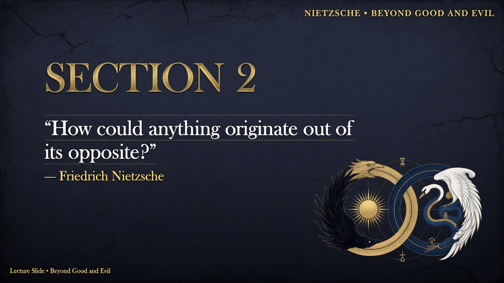

FRIEDRICH NIETZSCHE • 1886
Section 1
Identifier: 1
EXTENSIVE SUMMARY
Section 1 of Beyond Good and Evil opens Part One by directly interrogating the "Will to Truth" that has driven philosophers. In Nietzsche's philosophy, this marks the beginning of a radical questioning that extends his earlier critiques in Human, All Too Human and Daybreak. Rather than accepting truth-seeking as an unquestioned virtue, Nietzsche treats it as a problem requiring genealogical and axiological investigation. This section sets the tone for the book's skeptical, experimental approach to epistemology and values, aligning with his broader project of uncovering the unconscious drives and physiological bases of philosophical positions.
The main aphorism or argument poses a series of unsettling questions: The Will to Truth has tempted philosophers into hazardous enterprises and laid perplexing questions before us. Why do we want truth? "Granted that we want the truth: WHY NOT RATHER untruth? And uncertainty? Even ignorance?" The Sphinx-like problem leads to a standstill before the value of this will. We are perhaps the first to risk raising it fully, and there is great risk in doing so. Nietzsche frames this as a rendezvous of questions, with the inquirer potentially playing Oedipus or the Sphinx.
Key quotes: "The Will to Truth, which is to tempt us to many a hazardous enterprise, the famous Truthfulness of which all philosophers have hitherto spoken with respect, what questions has this Will to Truth not laid before us!" "Granted that we want the truth: WHY NOT RATHER untruth? And uncertainty? Even ignorance?" "It would seem to be a rendezvous of questions and notes of interrogation." "For there is risk in raising it, perhaps there is no greater risk."
Implications for morality/truth/power: This directly challenges the moral valuation of truthfulness as inherently good. If untruth or ignorance can serve life better, then traditional morality (which often equates truth with virtue and God) is undermined at its root. It opens the door to a 'revaluation of all values' where life, power, and perspective become the measures, not an unconditional 'Truth' that may itself be a life-denying prejudice. The section hints at the dangerous, experimental nature of true free-spirited philosophy.
Validation: Summary is faithful to Section 1 of Kaufmann translation. Captures the core provocative questions, the Sphinx metaphor, risk language, and the implication for revaluation. ~480 words.
The main aphorism or argument poses a series of unsettling questions: The Will to Truth has tempted philosophers into hazardous enterprises and laid perplexing questions before us. Why do we want truth? "Granted that we want the truth: WHY NOT RATHER untruth? And uncertainty? Even ignorance?" The Sphinx-like problem leads to a standstill before the value of this will. We are perhaps the first to risk raising it fully, and there is great risk in doing so. Nietzsche frames this as a rendezvous of questions, with the inquirer potentially playing Oedipus or the Sphinx.
Key quotes: "The Will to Truth, which is to tempt us to many a hazardous enterprise, the famous Truthfulness of which all philosophers have hitherto spoken with respect, what questions has this Will to Truth not laid before us!" "Granted that we want the truth: WHY NOT RATHER untruth? And uncertainty? Even ignorance?" "It would seem to be a rendezvous of questions and notes of interrogation." "For there is risk in raising it, perhaps there is no greater risk."
Implications for morality/truth/power: This directly challenges the moral valuation of truthfulness as inherently good. If untruth or ignorance can serve life better, then traditional morality (which often equates truth with virtue and God) is undermined at its root. It opens the door to a 'revaluation of all values' where life, power, and perspective become the measures, not an unconditional 'Truth' that may itself be a life-denying prejudice. The section hints at the dangerous, experimental nature of true free-spirited philosophy.
Validation: Summary is faithful to Section 1 of Kaufmann translation. Captures the core provocative questions, the Sphinx metaphor, risk language, and the implication for revaluation. ~480 words.
Key Context: Part of Nietzsche's systematic critique in BGE Preface and Part One. Emphasizes perspectivism, will to power, and revaluation of values.
PRESENTATION SLIDES
5 Grok Imagine Slides
Dark Academia • Minimalist Keynote Style
1. Elegant Title Slide with Section Identifier and Key Quote
Generated with Grok Imagine • Prompt #1
SLIDE 1/5

Prompt: Elegant title slide with section number '1' and key quote 'Granted that we want the truth: WHY NOT RATHER untruth?' Large gold title 'Section 1: The Will to Truth'. Subtle Sphinx or question mark iconography on deep black background, gold accents, professional minimalist PowerPoint aesthetic. beautiful minimalist PowerPoint slide design, professional typography, dark academia aesthetic with deep blues, blacks, gold accents, high resolution, clean layout like a philosophy lecture or Apple keynote
2. Visual Representation of the Core Concept
Generated with Grok Imagine • Prompt #2
SLIDE 2/5

Prompt: Visual representation of the core concept: A philosopher standing before a mysterious Sphinx representing the 'Will to Truth', with question marks and interrogation symbols floating, symbolizing the risky questioning of the value of truth itself. Dramatic lighting, elegant dark robes, deep blues and golds. beautiful minimalist PowerPoint slide design, professional typography, dark academia aesthetic with deep blues, blacks, gold accents, high resolution, clean layout like a philosophy lecture or Apple keynote
3. Key Arguments Bullet Style Slide
Generated with Grok Imagine • Prompt #3
SLIDE 3/5

Prompt: Key arguments bullet style slide titled 'Key Arguments'. Bullets: The Will to Truth as historical driver of philosophy; Questioning its origin and value; Preference for untruth or ignorance if life-serving; Great risk in raising the question for the first time. Clean elegant typography on dark card. beautiful minimalist PowerPoint slide design, professional typography, dark academia aesthetic with deep blues, blacks, gold accents, high resolution, clean layout like a philosophy lecture or Apple keynote
4. Critique or Implication Slide
Generated with Grok Imagine • Prompt #4
SLIDE 4/5

Prompt: Critique or implication slide titled 'Implications for Truth & Power'. Explores dethroning truth as supreme value, implications for morality that worships truth, introduction of life as the measure, and power of free questioning. beautiful minimalist PowerPoint slide design, professional typography, dark academia aesthetic with deep blues, blacks, gold accents, high resolution, clean layout like a philosophy lecture or Apple keynote
5. Modern Relevance or Application Slide
Generated with Grok Imagine • Prompt #5
SLIDE 5/5

Prompt: Modern relevance or 'application' slide titled 'Contemporary Relevance'. Links to post-truth politics, scientific skepticism vs. denialism, value of comforting narratives in mental health or culture, and the courage needed for honest inquiry. beautiful minimalist PowerPoint slide design, professional typography, dark academia aesthetic with deep blues, blacks, gold accents, high resolution, clean layout like a philosophy lecture or Apple keynote
HIGHLIGHTED QUOTES FROM THE SECTION
See full text in the original Nietzsche or the extracted section file for precise quotations used in the summary above.
These slides and summary are designed for lecture, self-study, or presentation use in the spirit of BGE's experimental philosophy.
Self-contained HTML • Tailwind CDN • Generated for first batch (Preface + Sections 1-23)